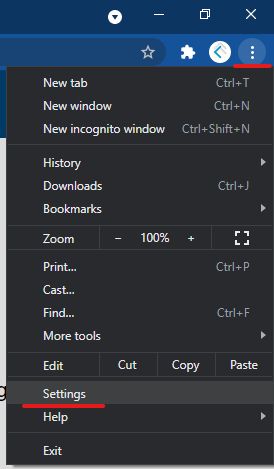
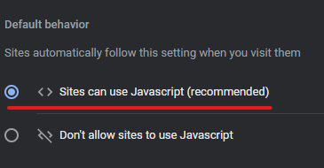

Enabling JavaScript in Your Web Browser
Enabling JavaScript in your web browser allows websites make use of the powerful programming behind much of the web.
JavaScript can be used to power many things, ranging from the deceptively simply press of an "Okay" button, all the way through to games and information services.
Choose your browser from the list below to get started.
Google Chrome
Enabling JavaScript in Google Chrome can be accomplished by using the following steps:
- Open Chrome's settings menu through the menu at the top right of the navigation bar
 - Search "java" using the search box.
- Select "Site Settings"
- In the Site Settings menu, scroll down and select "JavaScript"
- Select "Sites can use JavaScript" / "Allowed (recommended)"
 - JavaScript is now enabled on your browser!